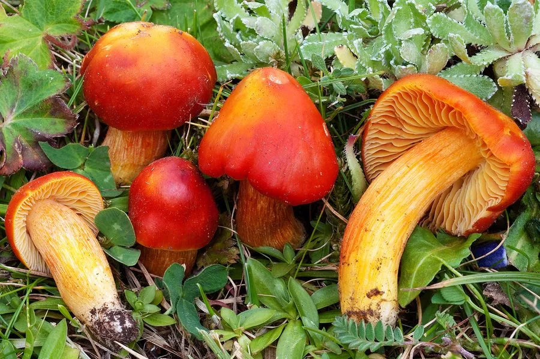

真菌 · 真菌界
红蜡伞 Hygrocybe punicea

蜡伞科蘑菇，菌盖深红至绯红、湿润时黏滑发亮，生于贫瘠草地，可食但同属多有胃肠毒性，不建议采食。
- 分类
- 门担子菌门纲伞菌纲目伞菌目科蜡伞科属蜡伞属
- 栖息环境
- 贫瘠未施肥的草地、牧场与林缘草甸，秋季发生
- 地理分布
- 欧洲为主，北美与亚洲温带草地有记录，中国西南高海拔草甸有分布
- 保护级别
- 欧洲多国列为濒危或近危；草地施肥与翻耕导致栖息地锐减
物种志
红蜡伞的子实体中等至较大，菌盖直径 4–10 厘米，初期圆锥形，后平展，中央凸起，表面深红、绯红至暗红色，湿润时黏滑发亮，干燥后略呈纤维状，边缘常开裂。菌肉厚，白色至淡红，质地脆。菌褶淡黄至橙黄，较宽、稀疏，弯生。菌柄长 5–12 厘米，直径 1–2 厘米，红色至橙红，表面有纵向纤维纹，中空。孢子印白色。
红蜡伞生于贫瘠、未经施肥的草地与牧场上，秋季发生，是欧洲“蜡伞草地”指示种之一，此类草地因农业集约化而急剧减少，红蜡伞在许多国家被列为濒危或近危。它本身可食，但蜡伞属中部分种类含胃肠刺激成分，且该属鉴定困难，因此不建议采食。观察时应记录草地类型与菌盖黏滑程度，为草地保护提供数据。
形态与习性
- 菌盖直径 4–10 厘米，深红至绯红，湿润黏滑
- 菌褶淡黄至橙黄，较宽稀疏，弯生
- 菌柄长 5–12 厘米，红色，有纵纤维纹
- 孢子印白色，孢子椭圆形
- 生境贫瘠未施肥草地，秋季发生
- 食用性可食但同属多有胃肠毒性，不建议采食
趣味知识
- 红蜡伞的菌盖湿润时像涂了一层蜡，黏滑发亮，这是蜡伞科得名的原因。
- 它只在贫瘠、未施化肥的老草地上生长，是草地生态质量的指示种。
- 欧洲多国因草地集约化把它列为濒危物种，比许多珍稀动物更需要关注。
- 蜡伞属颜色鲜艳的种类中，有些会引起胃肠炎，采食风险大于收益。